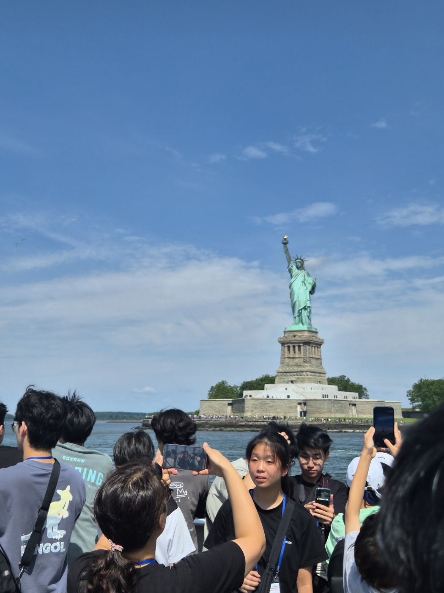

DAY5
Charging Bull / Statue of Liberty / Wall Street / Ground Zero / UN / The New York Public Library
The Kunjip / The Cast Iron Pot Signature

'이게 여행이지' 싶었던 순간이었다. 유람선을 타고 신나게 속도를 즐겼고, 그 유명한 자유의 여신상도 볼 수 있었다. 바람을 맞으며!
← HOME
← DAY4
DAY6 →